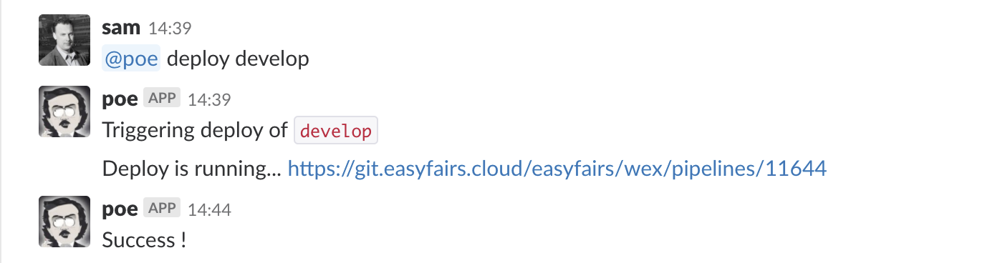

@poe
@poe is a CI/CD Slack bot, used by non-tech people to easily deploy software.
The main work on @poe was to formulate conversations as simple markdown files, rather than code. Built on top of Botpress.

triggers:
-
hears: "^deploy$"
in: ['direct_mention', 'direct_message']
action: default
-
hears: ^deploy (.*)$
in: ['direct_mention', 'direct_message']
action: validate_branch
capture:
branch: 1
convo:
default:
ask: which branch ?
capture: branch
action: validate_branch
validate_branch:
before:
plugin: api
host: gitlab
get: api/v4/projects/1/repository/branches/{{{vars.branch}}}
validate: response.name && vars.branch!=="master" && response.name === vars.branch
action: deploy
say: not a valid branch
deploy:
say: Triggering deploy of `{{{vars.branch}}}`
action: deploy_running
deploy_running:
before:
plugin: api
host: gitlab
post: api/v4/projects/1/trigger/pipeline
data:
ref: '{{{vars.branch}}}'
token: A52B7CAC3AF0B081349001C92D79CC0A
validate: response.status === 'pending'
capture: response.id as pipelineId
action: pipeline_running
say: Could not start pipeline
pipeline_running:
say: Deploy is running... https://git.acme.cloud/acme/wex/pipelines/{{vars.pipelineId}}
action: check_deploy
check_deploy:
before:
plugin: api
host: gitlab
get: api/v4/projects/1/pipelines/{{vars.pipelineId}}
waitFor: response.status === 'success'
failWhen: response.status === 'failed'
action: deploy_success
say: Deploy failed
deploy_success:
say: Success !
on_timeout:
say: I give up
plugin:
api:
gitlab:
base_url: https://git.acme.cloud/
headers: {PRIVATE-TOKEN: '16531ebd2b99c24e9'}